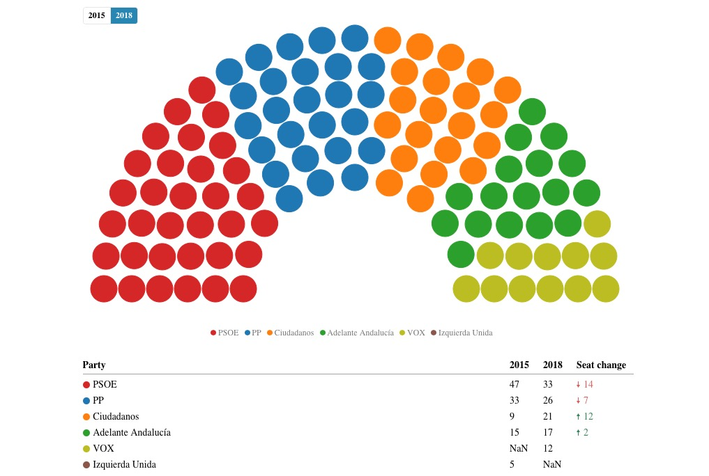

L’extrême droite anti-européenne fait irruption en Espagne avec 12 sièges
Le parti d’extrême droite antieuropéenne VOX rentre au Parlement andalou avec 11% des votes et pourrait être déterminant pour la formation du gouvernement régional. Six mois avant les élections générales et européennes, l’Espagne rentre ainsi dans la liste des pays européens où des partis eurosceptiques sont représentés dans les institutions publiques.
Le 26 décembre 2017, « El Mundo », un des journaux les plus connus en Espagne, publiait un article intitulé « Pas d’espace en Espagne pour la nouvelle droite populiste ». Depuis hier soir, ce gros titre est démenti.
Journalistes et politiciens ont longtemps fait valoir que l’Espagne avait réussi à bloquer le pas des populistes envers le gouvernement. Podemos, le parti le plus à gauche au Parlement né dans un contexte de crise économique, n’avait pas réussi à entrer dans le gouvernement de Madrid. De l’autre côté de l’échiquier politique, il n’y avait pas de parti d’extrême droite.
Les élections en Andalousie, la région la plus peuplée d’Espagne, ouvrent la porte à l’extrémisme de droite. Fief du Parti socialiste ouvrier espagnol (PSOE) depuis la transition démocratique espagnole, l’Andalousie a sanctionné ce parti, qui est passé de 47 à 33 sièges, tout en demeurant le parti ayant obtenu le plus de votes. C’est le plus mauvais résultat du parti dans la région, résultat qui semble encore plus retentissant si l’on tient compte que la somme des sièges entre le PSOE et le parti plus à sa gauche, « Adelante Andalucía » (la marque régionale du parti Podemos), n’arrive pas à avoir la majorité absolue des 55 sièges.
Copyright (c) 2018, graphique de Miquel Vidal Bover représentant le résultat en sièges des élections au parlement andalou 2018.
Cette fois-ci, l’Andalousie a donc voté plutôt à droite. Mais pas pour n’importe quelle droite. Deux partis de droite sont déjà connus : le Parti Populaire, le parti conservateur traditionnel, qui a aussi perdu des voix (26 sièges) et le parti Ciudadanos (centre-droite) qui lui a gagné des voix passant de 9 à 21 sièges. La grande nouveauté de ce scrutin a été l’irruption du parti VOX, qui a gagné 10,9 % des voix et 12 sièges. C’est la première fois depuis l’instauration du système démocratique espagnol qu’un parti d’extrême droite obtient des sièges dans un parlement. Dans un contexte de tensions politiques avec la crise catalane, la polémique liée à l’exhumation du corps du dictateur Franco de son mausolée et le retour des différends relatifs au statut de Gibraltar en parallèle des négociations pour le Brexit, ce parti a su attirer les voix des espagnols les plus nationalistes, tout en brandissant des notions bien connues comme la « Reconquista » faisant appel à la souveraineté de l’Espagne. Ce parti se déclare anti-européen et anti-immigration. Son leader est même allé jusqu’à affirmer que son parti ne veut pas d’une « Union européenne islamisée ». Il se décrit aussi comme anti-allemand, notamment depuis le fait que la justice allemande ait refusé de livrer l’ex-leader catalan Carles Puigdemont à la justice espagnole.
Le Parlement andalou devra dès demain essayer de former un gouvernement. Avec une majorité absolue à 55 sièges, seules deux options sont options possibles : soit le PSOE noue un accord de grande coalition avec son adversaire traditionnel, le Parti Populaire ; soit le Parti Populaire s’allie avec Ciudadanos et VOX. Ce serait alors la première fois depuis la transition démocratique espagnole qu’un parti d’extrême droite se hisserait au sein d’un gouvernement en Espagne.
Cet événement électoral est d’autant plus important car il initie une année de rendez-vous électoraux en Espagne. Selon toute probabilité, les élections municipales, générales et européennes (en plus de quelques élections régionales) se tiendront en mai prochain. Les élections d’hier en Andalousie étaient perçues comme un test pour le gouvernement de Pedro Sánchez (PSOE), test qui a été vraisemblablement manqué. Est-ce que le cas de l’Andalousie n’est qu’un cas isolé ou est-ce que l’Espagne se prépare à l’entrée d’un parti d’extrême droite anti-européenne au Parlement central ? L’Espagne va-t-elle être elle aussi frappée par la montée de l’euroscepticisme et de l’extrême droite ? Seul l’avenir nous apportera les réponses à ces interrogations.
Bibliographie
{kind=link}